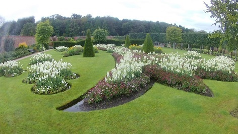

Bangor (Northern Ireland)
Gardens in Bangor:

Wall Garden in Bangor
The garden is divided into four different sections, each with its own horticultural personality. It also boasts two unique pieces of sculpture inspired by the Borough's maritime history. The Ward family designed Bangor Castle Walled Garden in the 1840s. It was previously closed to the public and was considered by many as a secret garden! North Down Borough Council restored this beautiful Garden and it was officially opened as a visitor attraction in April 2009. The garden won the Royal Horticultural Society Award for Permanent Landscaping in its first year of opening.
To Know more about it click here